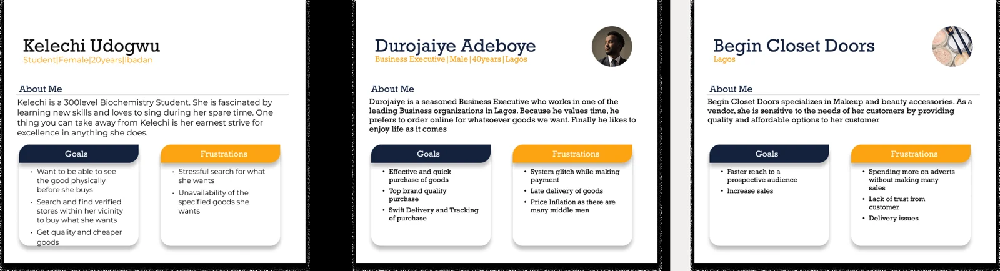
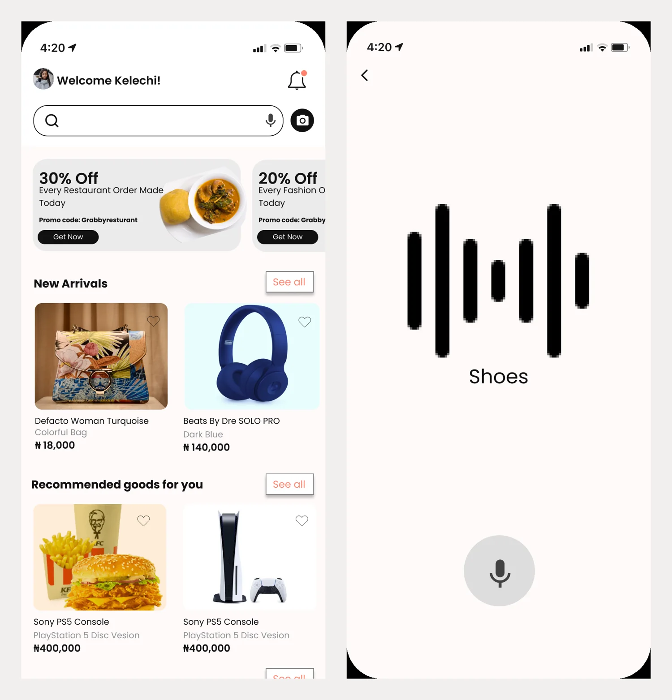
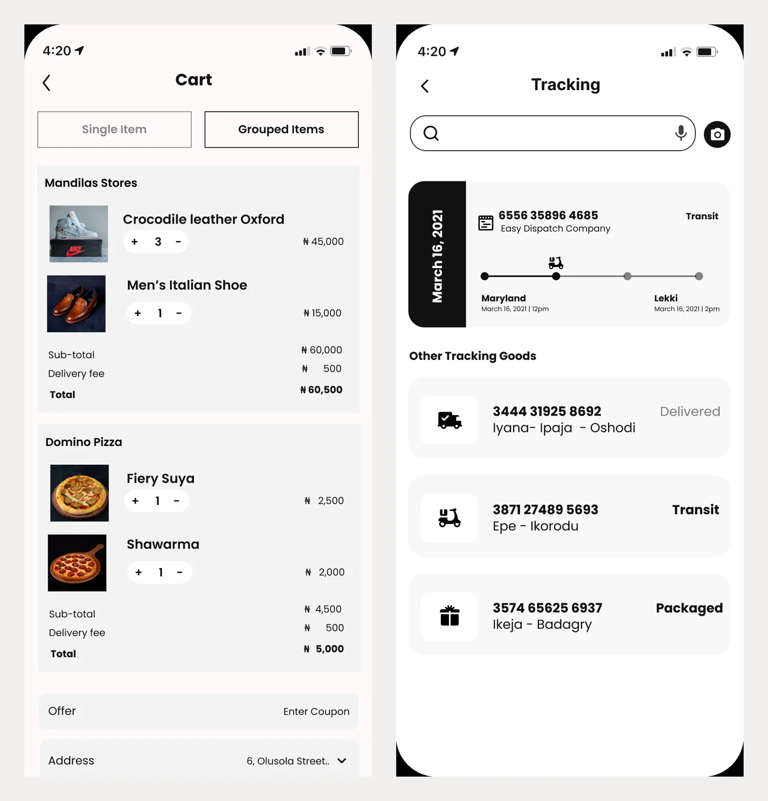

FIG. 05 — TEAM LEAD
Grabby: shopping that doesn’t make you register first.
An interactive, customisable e-commerce mobile app, designed by a team of eight that I led.
- Role
- Team Lead, UX/UI Design
- Timeframe
- 4 months (Feb–May 2022)
- Tools
- Figma, Photoshop, Google Workspace
- Team
- 8 UI/UX designers

Project cover from the DesignPal Cohort 1 Elite Team.
Led 8 designers
5 core pain points
50%+ of UI screens
The problem
Five things shoppers wanted, all at once.
Target users wanted to group orders by vendor to cut delivery costs, track deliveries in real time, check product quality before buying, and search and filter without friction, all while shopping without being forced to register first.
Process
How the work went.
- UnderstandOversaw research and analysis, finding five core user pain points.
- PlanSet the product development lifecycle and roadmap for the team of eight.
- StructureWireframes, personas, journey maps and user-flow diagrams.
- DesignPersonally designed more than half of the UI screens.
- PresentCo-designed the case study and the prototype.
What I did
Leading the team and designing the screens.
01Led the team
Took 8 designers through planning, ideation and the full product roadmap.
02Research
Oversaw research and analysis, identifying 5 core user pain points.
03UX foundations
Built wireframes, personas, journey maps and user-flow diagrams into a full UX solution.
04UI
Personally designed more than half of the UI screens.
Screens
From the pain points to the screens.
Screens from the team’s final Figma file; I designed more than half of the UI screens. Select an image to open it full size.

Who we designed for
Shoppers and vendors, with their frustrations.
Before Shoppers found search stressful, feared late delivery and wanted to track their orders. Vendors worried about delivery issues and customer trust.
After Each frustration became a requirement for the screens below.

Home and search
Find what you want by typing, voice or camera.
Before “Stressful search for what she wants” (Kelechi).
After The search bar sits at the top of Home with a microphone and a camera button, and a voice search screen. Home suggests new arrivals and recommended goods.

Cart and tracking
Group by store, then follow the delivery.
Before Shoppers wanted to group orders by vendor to cut delivery costs, and to track deliveries. Late delivery was a frustration (Durojaiye).
After A Single item / Grouped items switch in the cart, with a sub-total and delivery fee for each store. A Tracking screen lists each order with its status: Transit, Delivered or Packaged.